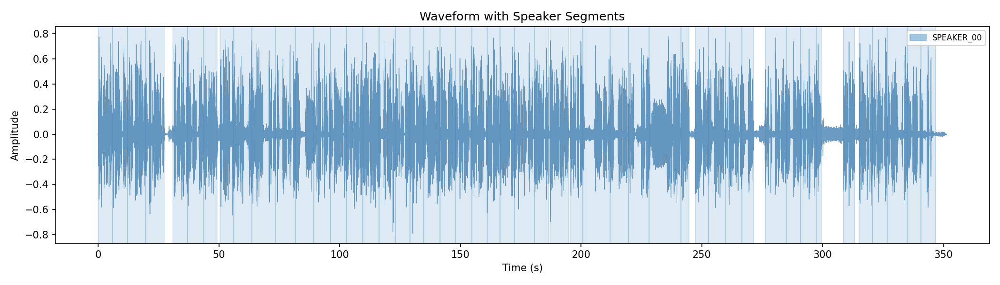
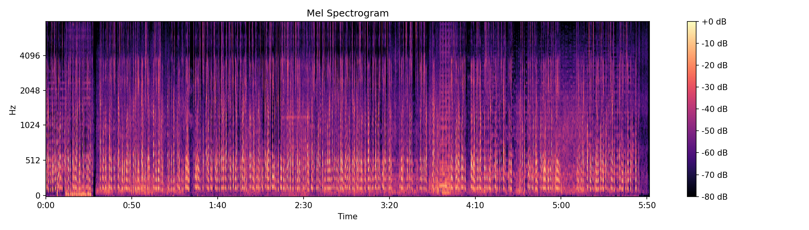
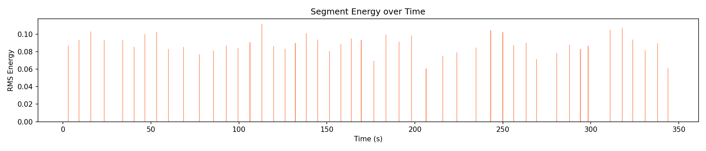
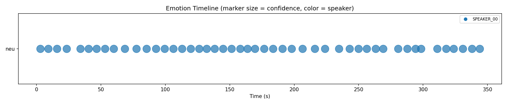

SpeakScan analysis report
| Speaker | Talk Time | Share | Turns |
|---|---|---|---|
| SPEAKER_00 | 323.04s | 100.0% | 1 |
| Emotion | Count | Share |
|---|---|---|
| neu | 48 | 100.0% |




You might have heard of this mega project called the Line in Saudi Arabia which surprisingly
has built but did you know that Poland already built something similar? It's called the wave
or in Polish, Veloviets. At 800 meters long it may not be as large as the line but it's still an
impressive building. Why was it built and why did they make it so damn long? Let's find out.
I'm in Gdajsk, a city in the north of Poland on the coast of the Baltic Sea. It has almost
half a million inhabitants and its Poland's major seaport. The center has a rich history and
is full of beautiful buildings but today I'm heading to a building about 7 kilometers away from it.
As a Dutch person I have to say that I actually enjoyed biking in Gdajsk. There are plenty of
bike lanes and even these food arrests for cyclists at traffic lights but sometimes the bicycle
lane suddenly ends leaving you cycling on a sidewalk or a busy road. Here we turn right and there it
is. Pretty hard to miss. Veloviets stands in Psymusia which means by the sea. That's why the building
is only 1 kilometer away from the beach. Today Psymusia is one of the most populated neighborhoods
in Gdajsk but this wasn't always the case. Before the area was mostly farmland and wasn't even
part of the city yet. This is clearly visible on this old map from 1900 when Gdajsk was part of
the German Empire and still called Danzig. At that time Psymusia didn't exist yet. In this photo
taken in Oliva around 1915 you can see the fields that once covered the area that would later become
Psymusia. After World War II, Poland faced a massive housing shortage. The government needed to
build large numbers of apartments quickly and cheaply. And what better place to build enormous
apartment blocks than on empty fields? In the 1950s the first residential blocks began to appear
in the neighborhoods. The famous Veloviets was completed in 1973 and took only 3 years to build,
remarkably fast for a structure of this size. This speed was made possible by the use of pre-fabricated
concrete panels, a construction method typical of socialist error housing developments. At the time
the surrounding infrastructure was poor and traces of the rural past were still visible. Instead of
constructing many separate buildings that all need their own infrastructure and facilities,
the architect simply extended the same structure again and again. This is the longest of 8 wave
blocks in Gdajsk. The second longest measures only about 600 meters. It's the skyscraper but sideways.
At 800 meters long it is the longest residential building in Poland and the third longest in Europe.
After the Karl Marxhof in Vienna at 1.1 kilometers and the Corvall in Rome at 980 meters,
it's so long that you can take a bus from one end, ride two stops and arrive at the other side of
the building. Despite its length the building is only 11 stories high, it has 16 staircases and houses
around 6,000 residents. Its distinctive wavy shape helps reduce strong winds from the sea and
improves light exposure for the apartments. I decided to park my bike and take a short walk around the
block. It took me 19 minutes and 4 seconds to walk the full 1.7 kilometers around it.
So walking your dog here can actually be quite a decent workout.
Faloviet was built according to the idea of modernism, large residential units containing a
high number of apartments. With open spaces between them reserved for greenery and public areas,
and indeed all along the building there are green spaces, playgrounds and benches giving the area
a lively atmosphere. The building also houses many small businesses.
And of course a job. I was curious to have a look inside and being too shy to ask I sneaked in
after someone entering the building. From the tenth floor you can enjoy a beautiful view of the
Baltic Sea and even see Gideña, a city about 13 kilometers away. And you can enjoy these
ugly AI-generated looking buildings.
Thanks to the building's wavy design you also get a great view along its entire length.
Overall this looks like an amazing place to live close to the sea, well depending on which
side of the building you live and with all the necessary facilities nearby. It's also well connected
to the rest of Gideña, with a 27-minute tram ride to the city center. So if you ever find yourself
walking along the beach in Gideña and would like to see an absurdly long building, you know where to
look for it now. Thanks for watching, bye bye.